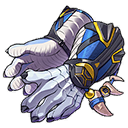
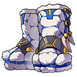

추천 광추
바람에 흩날리는 거짓말
속도 +18% · 공격 시 방깎
효과 자세히
망연 방어력 −16% · 전투 속도 170에서 도난 −8% 추가. 기본 확률 120%, 2턴. 상태별 최근 부여 효과 적용.
땀방울처럼 빛나는 결심
공격 시 함락 · 방어력 −16%
효과 자세히
함락 없는 적에게 기본 확률 100%, 1턴.
초보자 임무 시작 전
효과 명중 +40% · 에너지 회복
효과 자세히
방어력 감소 상태인 적 공격 → 에너지 +8pt.
휴일의 목욕탕 대모험
본인 피해 +32% · 적 받는 피해 +16%
효과 자세히
공격 후 기본 확률 100%로 취약 2턴. 같은 유형은 중복 적용되지 않음.
추천 유물
밤낮의 경계를 나는 매 4 · 바다에 잠긴 루샤카 2
- 머리
 주옵션HP부옵션속도 · 효과 명중 · HP% · 방어력% · 효과 저항
주옵션HP부옵션속도 · 효과 명중 · HP% · 방어력% · 효과 저항 - 손
 주옵션공격력부옵션속도 · 효과 명중 · HP% · 방어력% · 효과 저항
주옵션공격력부옵션속도 · 효과 명중 · HP% · 방어력% · 효과 저항 - 몸통
 주옵션효과 명중 / HP%부옵션속도 · 효과 명중 (주옵션 제외) · HP% (주옵션 제외) · 방어력% · 효과 저항
주옵션효과 명중 / HP%부옵션속도 · 효과 명중 (주옵션 제외) · HP% (주옵션 제외) · 방어력% · 효과 저항 - 다리
 주옵션속도부옵션효과 명중 · HP% · 방어력% · 효과 저항
주옵션속도부옵션효과 명중 · HP% · 방어력% · 효과 저항 - 구체
 주옵션HP% / 방어력%부옵션속도 · 효과 명중 · HP% (주옵션 제외) · 방어력% (주옵션 제외) · 효과 저항
주옵션HP% / 방어력%부옵션속도 · 효과 명중 · HP% (주옵션 제외) · 방어력% (주옵션 제외) · 효과 저항 - 매듭
 주옵션에너지 회복효율부옵션속도 · 효과 명중 · HP% · 방어력% · 효과 저항
주옵션에너지 회복효율부옵션속도 · 효과 명중 · HP% · 방어력% · 효과 저항
이 조합을 추천하는 이유
매 필살기 후 행동 게이지 +25%. 루샤카 회복효율 +5%, 1번 공격력 +12%.
밤낮의 경계를 나는 매 4 · 꿈의 땅 페나코니 2
- 머리
주옵션HP부옵션속도 · 효과 명중 · HP% · 방어력% · 효과 저항
- 손
주옵션공격력부옵션속도 · 효과 명중 · HP% · 방어력% · 효과 저항
- 몸통
주옵션효과 명중 / HP%부옵션속도 · 효과 명중 (주옵션 제외) · HP% (주옵션 제외) · 방어력% · 효과 저항
- 다리
주옵션속도부옵션효과 명중 · HP% · 방어력% · 효과 저항
- 구체 주옵션HP% / 방어력%부옵션속도 · 효과 명중 · HP% (주옵션 제외) · 방어력% (주옵션 제외) · 효과 저항
- 매듭
 주옵션에너지 회복효율부옵션속도 · 효과 명중 · HP% · 방어력% · 효과 저항
주옵션에너지 회복효율부옵션속도 · 효과 명중 · HP% · 방어력% · 효과 저항
이 조합을 추천하는 이유
페나코니 회복효율 +5% · 얼음 동료 피해 +10%. 4돌 스킬은 얼음 저항 감소 추가.
혹한 밀림의 사냥꾼 4 · 회전을 멈춘 살소토 2
- 머리 주옵션HP부옵션효과 명중 · 속도 · 치명타 확률 · 치명타 피해
- 손

주옵션공격력부옵션효과 명중 · 속도 · 치명타 확률 · 치명타 피해 - 몸통
 주옵션치명타 확률 / 치명타 피해부옵션효과 명중 · 속도 · 치명타 확률 (주옵션 제외) · 치명타 피해 (주옵션 제외)
주옵션치명타 확률 / 치명타 피해부옵션효과 명중 · 속도 · 치명타 확률 (주옵션 제외) · 치명타 피해 (주옵션 제외) - 다리

주옵션속도부옵션효과 명중 · 치명타 확률 · 치명타 피해 - 구체
 주옵션얼음 속성 피해부옵션효과 명중 · 속도 · 치명타 확률 · 치명타 피해
주옵션얼음 속성 피해부옵션효과 명중 · 속도 · 치명타 확률 · 치명타 피해 - 매듭
 주옵션에너지 회복효율부옵션효과 명중 · 속도 · 치명타 확률 · 치명타 피해
주옵션에너지 회복효율부옵션효과 명중 · 속도 · 치명타 확률 · 치명타 피해
이 조합을 추천하는 이유
사냥꾼은 필살기 후 치명타 피해를 높이고, 살소토는 전투 치명타 확률 50%에서 필살기 피해를 보강합니다.
이 정도면 잘 키웠다
선택한 세팅 기준 · —는 확인된 수치 없음
- 아케론 편성
- 땀방울
매로 필살기 회전을 돕고 결심 광추로 추가 디버프를 부여합니다.
| 스탯 | 추천 스탯 | 준종결 | 종결 |
|---|---|---|---|
| 속도 | 151 | — | 최대한 |
| 효과 명중 | 50% | — | 67%+ |
| 에너지 회복효율 | 124.44%+[1]기본 100%에 5성 +15 매듭의 에너지 회복효율 19.44%p와 「바다에 잠긴 루샤카」 2세트의 5%p를 더한 총량입니다. | — | — |
세팅 기준·출처
추천과 종결 속도·효과 명중은 아케론 파티 구분을 둔 영원한 주말 기준입니다. Prydwen의 67%에는 페라의 효과 명중 행적이 포함됩니다. 공개 가이드에서 이 세팅의 준종결 수치를 확인하지 못했습니다.
스탯 조건과 각주
- 에너지 회복효율 · 추천 스탯 기본 100%에 5성 +15 매듭의 에너지 회복효율 19.44%p와 「바다에 잠긴 루샤카」 2세트의 5%p를 더한 총량입니다. ↑
- 4돌
- 얼음 딜러 편성
페라 4돌에서 전투 스킬의 얼음 저항 감소를 활용합니다.
| 스탯 | 추천 스탯 | 준종결 | 종결 |
|---|---|---|---|
| 속도 | 133.4+ | — | — |
| 효과 명중 | 66.7%[1]Prydwen의 67% 목표에는 페라의 효과 명중 행적이 포함됩니다. | — | — |
| 에너지 회복효율 | 124.44%+[2]기본 100%에 5성 +15 매듭의 에너지 회복효율 19.44%p와 「꿈의 땅 페나코니」 2세트의 5%p를 더한 총량입니다. | — | — |
세팅 기준·출처
공개 가이드에서 이 세팅의 준종결 또는 종결 수치를 확인하지 못했습니다.
- 아케론 미편성
공개 가이드가 아케론 이외 파티에 제시하는 별도 세팅입니다.
| 스탯 | 추천 스탯 | 준종결 | 종결 |
|---|---|---|---|
| 속도 | 134 | — | 134 |
| 효과 명중 | 50% | — | 67%+ |
| 치명타 확률 | 50% | — | 60% |
| 치명타 피해 | 100% | — | 120% |
성혼과 추천 돌파
1돌 적 처치 시 에너지 회복 · 4돌 얼음 딜러에게 저항 감소 지원.
1적 처치 → 에너지 +5pt추천
동료의 적 처치에도 적용.
2적 버프 해제 → 본인 속도 +10%
전투 스킬로 해제한 경우 2턴.
3전투 스킬 +2 · 일반 공격 +1
스킬·일반 공격 레벨 상한 각각 15·10.
4전투 스킬 → 얼음 저항 −12%추천
기본 확률 100%, 2턴.
5필살기·특성 +2
필살기·특성 레벨 상한 각각 15.
6디버프 적에 얼음 추가 피해
공격 후 공격력의 40% 추가 피해.
추천 파티


기본 운영과 행적
딜러 공격 전에 방어력 감소
약점과 무관하게 적 전체에게 필살기 방어력 감소 → 딜러 집중 공격.
- 버프 해제가 필요할 때만 전투 스킬. 디버프 적 공격으로 특성 에너지 확보.
행적 육성 순서
필살기 → 특성 → 전투 스킬·일반 공격
아하 속도 계산기 →기준과 출처 · 2026-11-27
4.7 데이터 · Prydwen 장비 참고 · 자료실 편성 예시